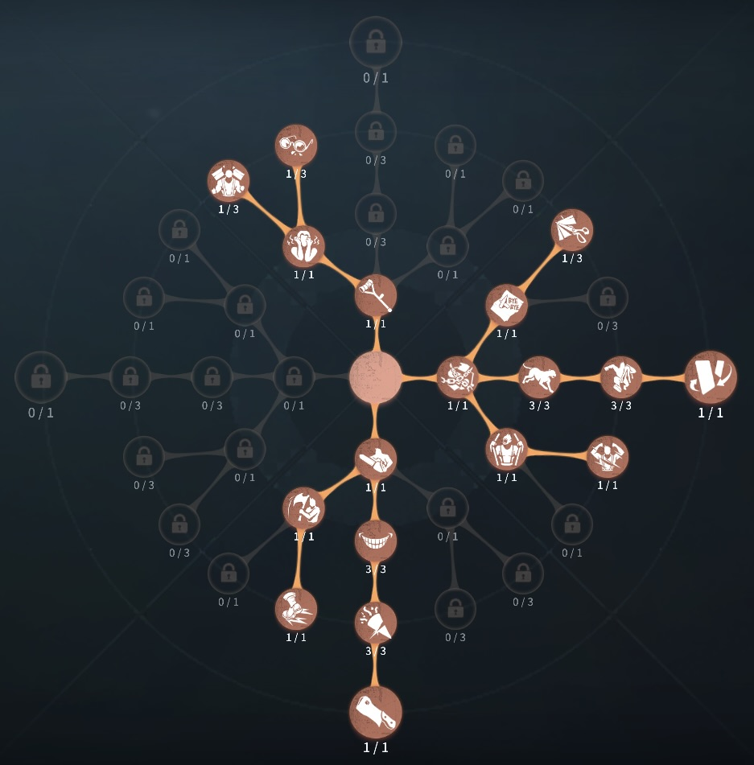
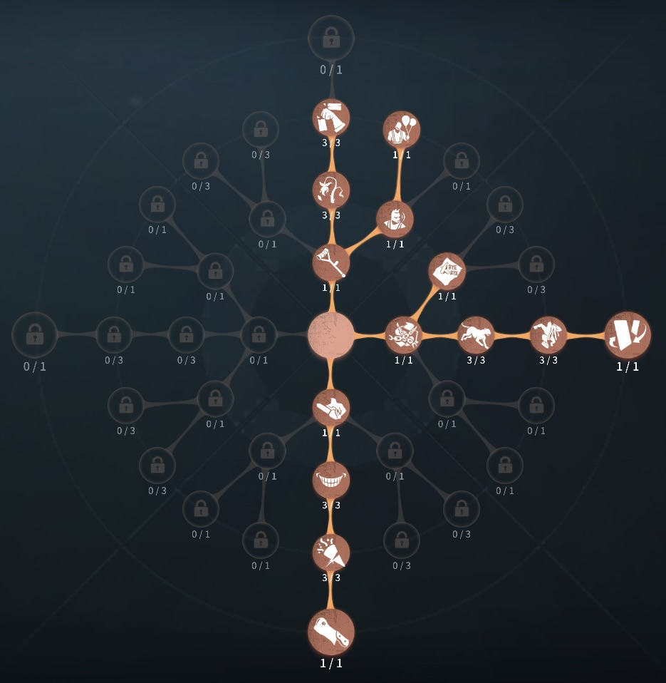

芸者（美智子）の評価
距離詰め最強ハンター
外在特質とスキル
特質1:三役
・美人相警戒範囲が狭い、移動速度が速い
・般若相
攻撃、刹那、離魄移魂、板破壊、風船持ち上げ、気絶、監視者、巡視者、瞬間移動をすると般若相になる。心音範囲が大きく、移動速度が遅い。10秒間特定の行動をしなければ美人相に戻る。
・狼狽相
サバイバーに見られている間は刹那ができなくなる。
存在感0：苦海ダンス、刹那消滅
・苦海ダンス：一定範囲内の指定場所にアゲハ蝶を放つことができる。アゲハ蝶は40秒間滞在する。 アゲハ蝶がサバイバーに触れたとき、30秒間そのサバイバーにとりつく。 またアゲハ蝶は通常攻撃が命中すると消失する。
・刹那消滅：
一定範囲内のアゲハ蝶かアゲハ蝶がとりついているサバイバーに向かって高速で移動することができる。アゲハにとりつかれたサバイバーはハンターを凝視できるようになり、 凝視している間は刹那ができない。また刹那使用時、高速で移動している途中に凝視されるとその時点で移動は中断される。
存在感1：離魄移魄
・空中に浮かび上がることができ、浮かんでいる最中に苦海ダンスや刹那をすることができる。その際アゲハを投げる距離が42.2m、刹那のできる距離が60mに広がる。存在感2：強化
・アゲハ蝶の飛行速度上昇し、刹那の移動速度も上昇する。ハンターの立ち回り方
1. 初動の立ち回り
芸者は「刹那生滅（ワープ）」を活用して機動力を活かし、序盤から素早く圧をかけることができます。最初のチェイスを有利に進めるために、索敵と立ち回りを意識しましょう。
・索敵を優先:
暗号機を巡回しながら、サバイバーの位置を特定する。
遠くのサバイバーを視認すると刹那生滅を発動できるため、視界に入れることを意識する。
遠距離から一気に距離を詰め、通常攻撃を当てる流れを作る。
2. 刹那生滅の使い方
芸者の「刹那生滅（ワープ）」は、チェイスや奇襲において非常に強力なスキルです。
・刹那で距離を詰める:
視界に入ったサバイバーへ一気にワープして接近。
サバイバーが強ポジションに逃げ込む前に、ワープを使って先に仕掛ける。
直線的に逃げるサバイバーに対しては、刹那生滅を駆使することで簡単に攻撃を当てられる。
・心理的プレッシャーを与える
視認されているとワープできないという特徴を逆手に取り、フェイントをかける。
サバイバーが後ろを向いて視線を遮るタイミングを狙い、ワープを決める。
板や窓を超える瞬間にワープして、強ポジションに逃げるのを阻止する。
3. チェイス中の立ち回り
芸者のチェイスは、刹那生滅の使い方次第で大きく変わります。
・板・窓を使わせない立ち回り:
サバイバーが板や窓を使おうとする前にワープする
先にポジションを取ることで、逃げ道を封じることができる。
ワープを使うことで板グルを強引に突破
板グル中にサバイバーがこちらを視認し続けるとワープできないため、フェイントをかけて視界を外させる。
・刹那生滅を温存する:
無駄にワープを使わず、確実に攻撃できるタイミングを狙う
サバイバーが視線を外すのを待つことで、心理戦を有利に進める
4. 注意点
刹那生滅の精度を上げる → 無駄なワープを減らし、確実に当てるために練習する。
サバイバーの行動を予測する → サバイバーが意図的に視線を向けることを逆手に取り、心理戦を有利に進める。
暗号機管理を意識する → 足が遅めのハンターなので、無駄な移動を減らし、効率的にサバイバーを追い詰める。
おすすめの内在人格
裏向きカード衝動型人格
この内在人格は、衝動に振ることでため攻撃で攻撃を当てやすくし、指名手配で中間位置から攻撃でアゲハで救助狩りを狙う人格

裏向きカード破壊欲型人格
この内在人格は、板割りを早やくして、おもてなしで粘着を軽減する人格


みんなのコメント